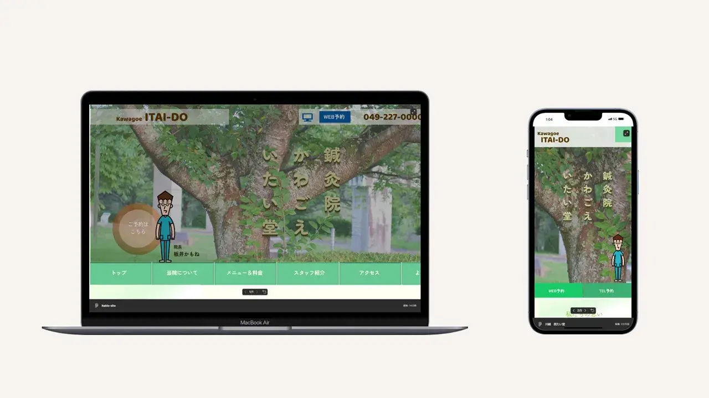

- 制作時間
- 10時間
- 制作ツール
- VS Code/Photoshop/Figma
- 使用言語
- HTML/CSS/Javascript/jQuery
- 担当作業
- 要件定義/提案資料作成/ライティング/キャラクター作成/ワイヤー作成/カンプ作成/コーディング
オリジナルサイト制作 #2
- 埼玉県川越市にある、架空の鍼灸マッサージ店の集客UPのためのWebサイトを企画
- グループディスカッションで、地域のマーケティング調査、競合店の調査、ペルソナ設定、カラースキーム設定
- 世界観に合わせたメインビジュアル、キャラクター作成、ライティング、カンプ制作、コーディング